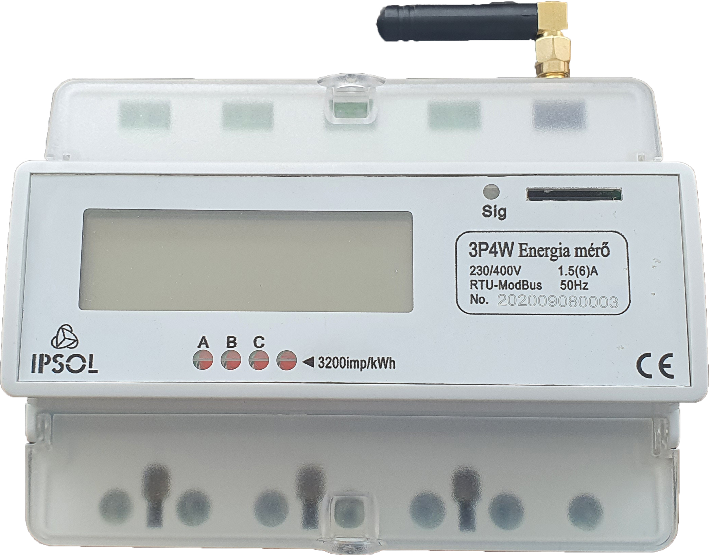

Tisztelt
%fullname% !
%fullname% !
Bizonyára Ön is értesült róla, hogy minden
szakreferens igénybevételére kötelezett gazdálkodó szervezetnek
meg
kell vizsgálnia, hogyan kíván eleget tenni az 1/2020 MEKH rendeletnek, amely első körben 2021. január 1-től hárít
feladatokat a cégekre.
kell vizsgálnia, hogyan kíván eleget tenni az 1/2020 MEKH rendeletnek, amely első körben 2021. január 1-től hárít
feladatokat a cégekre.
Szeretnénk figyelmébe ajánlani az IPSOL Zrt. almérési megoldását, amellyel
egyszerűen
és
költséghatékonyan tudja
teljesíteni törvényi kötelezettségét.
teljesíteni törvényi kötelezettségét.
Az általunk forgalmazott iMeter közvetlen GSM-kapcsolattal van ellátva, amely
egyenesen a szervereinkre továbbítja
a törvény által előírt 15 perces felbontású adatokat. A mérőket mi minden esetben előkészítjük, így Önnek nincs más teendője, mint:
- felszerelni a kötelezett berendezésekre vagy helyekre,
- a mobiltelefonjára telepíthető applikációval megadni az áramváltó áttételt, valamint szakreferensének az e-mail címét, hogy automatikusan megkaphassa az adatokat – így Önnek már ezzel sem kell külön foglalkoznia.

A december 20-ig rendelések mellé ajándék nem
bontható áramváltót adunk! 20 db vagy annál több almérő vásárlása esetén kérje egyedi ajánlatunkat!
bontható áramváltót adunk! 20 db vagy annál több almérő vásárlása esetén kérje egyedi ajánlatunkat!
Amennyiben a mérők felszerelését nem tudja megoldani, úgy a megrendelés megjegyzés rovatába kérjük írja be, „felszerelést kérek”, és kollégánk felkeresi Önt a telepítési árakkal
kapcsolatban.
kapcsolatban.